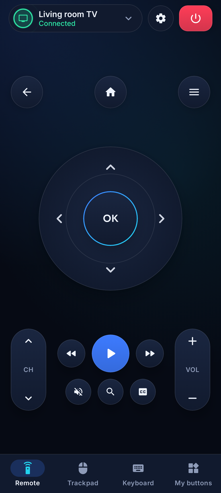
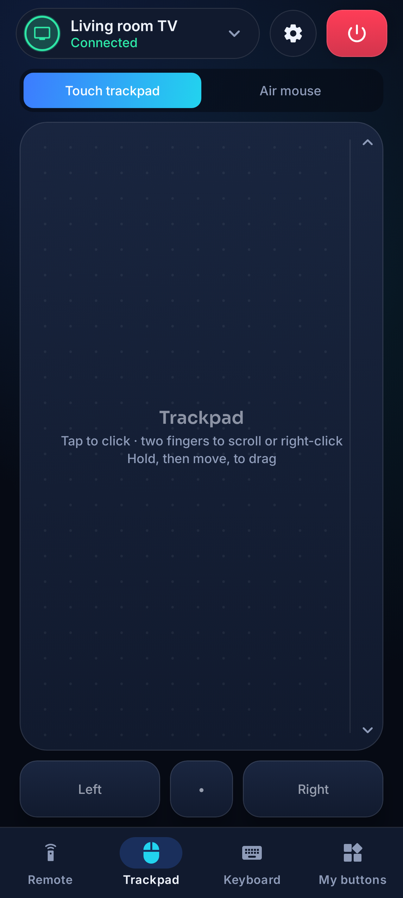
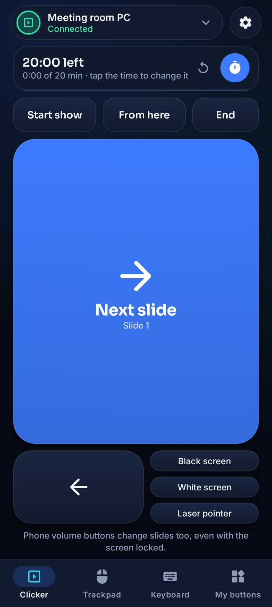
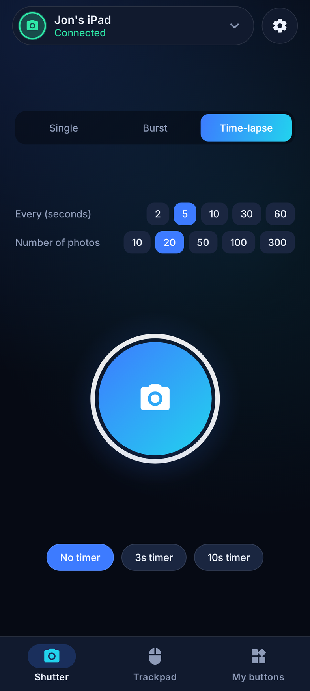
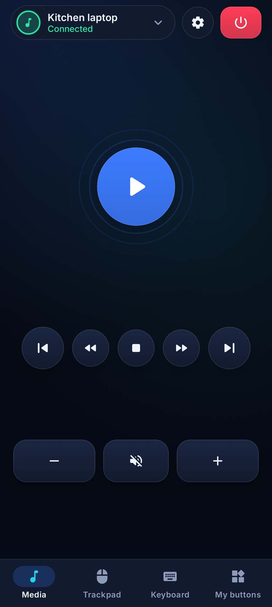
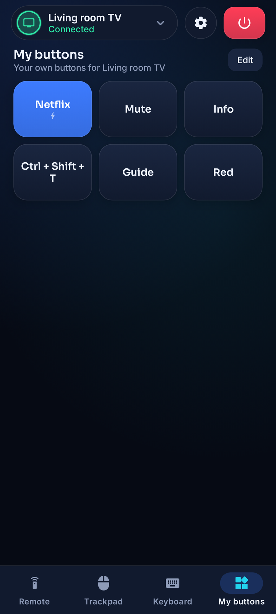
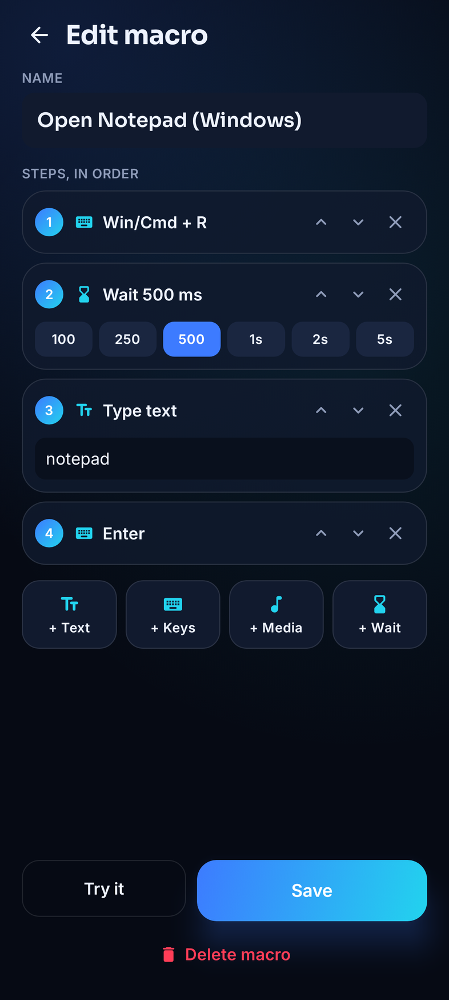
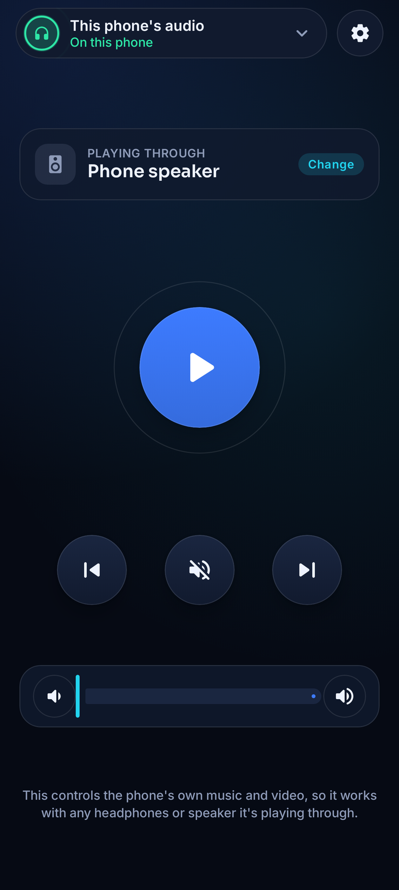

Your phone. Every remote.
BlueClick turns your phone into a Bluetooth remote for the things you already own: an Android TV or smart TV, a Windows PC, a Mac, an iPad or tablet, or another phone. Pick a preset when you open it and you get the right remote straight away: a TV remote, a trackpad and keyboard, a slide clicker, a camera shutter, media keys or a gamepad.
It works only with devices that accept a Bluetooth keyboard or mouse. There is nothing to install on the other device, no Wi-Fi and no account. BlueClick has no infrared, so it cannot control an older TV, a fan or an air conditioner that only has an infrared remote.
Download for AndroidHow to install
- Version 1.0.0
- Android 11 or later
- 3.0 MB
Free, with nothing to unlock. No adverts, no account with the developer, no tracking. Compare or read the release notes.
Chrome may say the file might be harmful. It shows this for app files that do not come from Google Play. Choose Download anyway.

- No advertsNone in the app and none on this site.
- Nothing to buyEvery feature is free, with nothing locked.
- No accountNothing to sign up for.
- No internet permissionAndroid itself stops BlueClick going online.
A look inside
These are the real screens, drawn from the app's own code with made-up device names. Swipe or scroll sideways to see them all.







How it works
Your phone tells the other device it is a Bluetooth keyboard, mouse and remote, the same as one you buy in a shop. The other device needs nothing extra: if it accepts a Bluetooth keyboard, it works with BlueClick.
Pick a preset
Open BlueClick and choose what you want to control: an Android TV, another smart TV, Windows, a Mac, a presentation, a camera, media, keyboard and mouse, or a gamepad.
Pair once
BlueClick makes your phone visible and walks you through adding it in the other device's Bluetooth settings. After that it reconnects with one tap.
Use it
The right remote opens for that device. Switch preset or device from the top bar at any time, and each device remembers its own preset and buttons.
Everything is in, and all of it is free
Nothing below is held back for a paid tier, because there is no paid tier.
Remotes for everything
- TV remote
- D-pad, OK, home, back, menu, channel, volume, mute, search and media keys for Android TV, Google TV, Fire TV and other TVs that accept Bluetooth.
- Trackpad and air mouse
- A full trackpad with tap, two-finger scroll, right-click and drag, or point the phone and move it like a laser to steer the pointer.
- Keyboard and voice typing
- A full keyboard with UK, US and Mac layouts, shortcuts, and voice typing turned into text on the phone itself.
- Gamepad
- A twin-stick controller with a D-pad, face buttons and shoulder buttons.
Talks and photos
- Slide clicker
- Next and back, start show, from here and end, a talk timer, black or white screen and a laser pointer, for PowerPoint, Keynote and Google Slides.
- Volume buttons, screen locked
- While connected, the phone's own volume buttons move the slides or take the photo, even with the screen off.
- Camera shutter
- Take photos on an iPad, tablet or another phone from across the room: single shots, bursts and time-lapse, with a 3 or 10 second timer.
- Your own music
- The Phone audio preset controls music and video on your own phone, through whatever headphones or speaker it is playing.
Make it yours
- My buttons
- Add your own buttons for each device: any key, shortcut or media key, or a whole macro.
- Macros
- Chain keys, typed text, media keys and pauses, and run them from one button. Examples are built in to start from.
- Reprogram any button
- Change what any button on a remote sends, for one device only.
- Widgets and quick tile
- A clicker widget and a controls widget on your home screen, a quick settings tile, and controls in the notification.
Easy to use
- Many devices
- Save as many devices as you like, each with its own preset, layout and buttons, and switch from the top bar.
- One-handed and left-handed
- Shrink the remote towards your thumb, swap sides for your left hand, or make the buttons bigger.
- Feel and look
- Dark and light themes, button vibration you can turn down, reduced motion, and screen-reader labels throughout.
- Backup to a file
- Save your devices, buttons, macros and settings to a file and restore them on a new phone.
Private by design
No internet at all
BlueClick has no internet permission, so Android itself stops it going online. It talks only to your own paired devices, over Bluetooth.
No ads, no tracking
There is no advertising, analytics or tracking, in the app or on this site.
Microphone only for voice typing
The microphone is asked for only if you use voice typing, and speech is turned into text on the phone. Nothing is recorded.
Installing and updating
BlueClick is not on Google Play, so your phone asks a couple of extra questions the first time.
Download the app file
Tap Download on your phone. The file is called BlueClick.apk and is about 3.0 MB. If Chrome says the file might be harmful, choose Download anyway.
Allow the install
Open the file. The first time, Android asks you to allow your browser to install apps. Allow it, go back and tap Install. If Google Play Protect steps in, choose More details, then Install anyway.
Updating later
BlueClick does not check for updates by itself. In Settings, About, the button "Newer version?" opens the release notes page in your browser. Install the new file over the old one and your devices, buttons, macros and settings are kept.
Version 1.0.0, released 27 November 2026. See the release notes, or check your download.
Questions
Is BlueClick really free?
Yes. There is no paid version, no subscription and no adverts, and nothing in the app is locked.
Is it on Google Play?
No. BlueClick is a personal project and is downloaded from this site as an Android app file. It needs Android 11 or later.
What can it control?
Anything that accepts a Bluetooth keyboard or mouse: Android TV, Google TV and Fire TV, many smart TVs, Windows and Mac computers, Chromebooks, iPads and iPhones, Android tablets and phones. Your own phone's music is controlled by the Phone audio preset.
Will it work with my old TV, fan or air conditioner?
Only if it accepts a Bluetooth keyboard. BlueClick does not use infrared, so it cannot control devices that only have an infrared remote. Phones with an infrared blaster are rare now, and BlueClick is built for Bluetooth only.
Why does it say my phone doesn't support it?
BlueClick uses Android's built-in Bluetooth keyboard and mouse feature. A few phones have it switched off by the maker. BlueClick checks this when it opens and tells you plainly if your phone is one of them.
Do I need to install anything on my computer or TV?
No. Pair your phone in the other device's Bluetooth settings, the same as a shop-bought keyboard, and that is all.
Can it switch my TV on?
Some TVs wake up when a paired Bluetooth remote presses a key, and BlueClick sends the power key where the TV allows it. Many TVs switch Bluetooth off when they are in standby, and then nothing can wake them over Bluetooth.
Why are some keys wrong on my computer?
Choose the keyboard layout the computer uses, UK, US or Mac, on the device's page in BlueClick. The layout must match the one set on the computer.
Does it work on an iPhone?
BlueClick runs on Android phones only. It can control an iPhone or iPad as the other device.
Who made it?
BlueClick is made by Jonathan Jackson, an independent developer in the United Kingdom.
One phone, every remote
Free, with no adverts and nothing to unlock. Made by the developer of several other free Android apps: see them all.